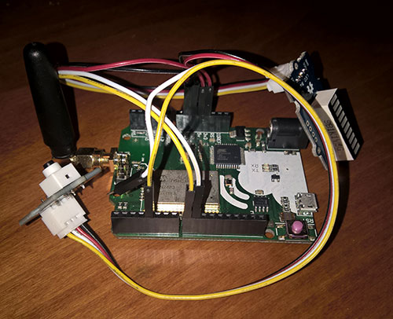
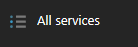
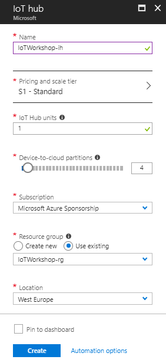
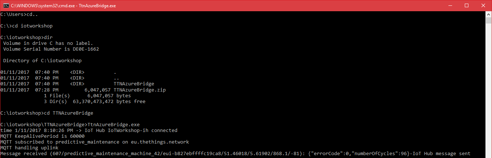

In this chapter you will configure the The Things Uno with two sensors, connect it to The Things Network platform. On the The Things platform you will provision (generate keys for) the The Things Uno, receive its messages and decode the telemetry. As final step in this chapter you will deploy a bridge between the The Things Network platform and Microsoft Azure IoT platform.
Note: In this workshop, we will create uniquely named Azure resources. The suggested names could be reserved already. Just try another unique name.
During this chapter most of these will be explained in dept.
A computer with internet access
A The Things Uno, a LED Bar Sensor, a Button Sensor, wiring & a micro USB cable
Node.js. (We prefer Version 8)
Azure account create here (Azure passes will be present for those who have no Azure account (please check your email for final confirmation))
Bridge software between TTN and Azure TtnAzureBridge (or as zip)
IoT Hub Explorer (for Command-Line interface based usage; see below for installation steps) or Device Explorer. (Locate the download link for the SetupDeviceExplorer.msi installer. Download and run the installer)
Seeed Grove Led Bar software library (or as zip)
Modern, up-to-date browser like Edge, Chrome and Firefox

Follow the workshop facilitator connecting the two sensors. A few important things:
3.3v pin on the ‘The Things Uno’4 (fifth pin in the pin header) on the ‘The Things Uno’GND pins on the ‘The Things Uno’5v pin on the ‘The Things Uno’GND pins on the ‘The Things Uno’8 on the ‘The Things Uno’9 on the ‘The Things Uno’Your device and sensors should be connected as follows:
Overview

Details pin layout node
Button pin layout

LED Bar pin layout


We start with running a simple sketch on the Arduino. This is a program which simulates a machine and when you press a button it ‘breaks down’.
Copy the zip file ‘Grove_LED_Bar-master.zip’ from this OneDrive location to a folder (you do not have to unzip it)
Open the Arduino IDE
Select menu Sketch, Include library, Add .ZIP Library. A dialog to add a library is shown
Select the ‘Grove_LED_Bar-master.zip’ and select Open
Check if the library is imported correctly. A collection (of sketches) named ‘Grove_LED_Bar-master’ should appear in menu File, Examples, Examples from Custom Libraries
Connect The Things Uno via the micro USB cable to your computer
In the Tools menu, click Board and select Arduino Leonardo
In the Tools menu, click Port and select the serial port of your COMx (Arduino Leonardo)
Paste the following code in a new sketch:
#include <Grove_LED_Bar.h>
#define debugSerial Serial
int commButton = 4;
int cycleCompleted = 0;
int errorCode = 0;
#define debugSerial Serial
Grove_LED_Bar bar(9, 8, 0); // Clock pin, Data pin, Orientation
void setup()
{
debugSerial.begin(9600);
pinMode(commButton, INPUT);
delay(1000);
debugSerial.println("Initializing");
bar.begin();
bar.setLed(1,1);
delay(250);
bar.setLed(1,0);
bar.setLed(2, 1);
delay(250);
bar.setLed(2,0);
for (int i = 3; i < 11; i++) {
bar.setLed(i, 1);
delay(250);
};
for (int i = 11; i > 2; i--) {
bar.setLed(i, 0);
delay(250);
};
bar.setLed(2,1);
debugSerial.println("Led bar initialized");
}
void loop()
{
// Simulate police LED lights using setLed method
for (float i = 0; i < 1.1; i += .100f) {
bar.setLed(2, 1 - i);
delay(150);
};
for (float i = 0; i < 1.1; i += .100f) {
bar.setLed(2, i);
delay(150);
};
// If not in error state, update the number of cycles
if (errorCode == 0) {
clearProgress(cycleCompleted);
showProgress(cycleCompleted);
cycleCompleted++;
debugSerial.print("Cycle completed: ");
debugSerial.println(cycleCompleted );
}
// In the button is pushed, the machine enters an error state
if (digitalRead(commButton) == HIGH) {
errorCode = 99;
bar.setLed(1,1);
debugSerial.print("Error occured: ");
debugSerial.println( errorCode);
debugSerial.println("Repair of machine needed...");
}
// Communicate with TTN about number of cycles and current state (error code)
byte buffer[2];
buffer[0] = (byte) cycleCompleted;
buffer[1] = (byte) errorCode;
delay(12000);
}
void showProgress(int i){
switch(i % 5){
case 0:
bar.setLed(3,1);
break;
case 1:
bar.setLed(4,1);
break;
case 2:
bar.setLed(5,1);
break;
case 3:
bar.setLed(6,1);
break;
case 4:
bar.setLed(7,1);
break;
}
}
void clearProgress(int i){
if ((i % 5) == 0) {
bar.setLed(3,0);
bar.setLed(4,0);
bar.setLed(5,0);
bar.setLed(6,0);
bar.setLed(7,0);
}
}In the Sketch menu, click Verify/Compile
Go to the Tools menu and open the Serial Monitor
Go back to the Sketch menu and click Upload
Once the sketch has been uploaded, You should see output like this.
Just wait a few seconds before pushing the button (please push and hold until the error message occurs):
Initializing
Led bar initialized
Cycle completed: 1
Cycle completed: 2
Cycle completed: 3
...
Error occured: 99
Repair of machine needed...Note: The red LED on the LED bar should be lit too.
Now we have a running Arduino with some basic logic. Let’s send some messages using The Things Network.
Follow the steps to create an application and register your device.
A selection between Applications maintenance and Gateways maintenance must be made. Choose Applications
A The Things Network application is a logical container of several devices, providing the same telemetry. There are no TTN applications yet
Add a new application. Pick a unique Application ID (for example predictive_maintenance in lower case) and fill in a description
Go to Devices

Enter a Device ID (for example predictive_maintenance_machine_42 in lower case)

Click the Generate icon for ‘Device EUI’ so a unique EUI can be generated on register
The text in the ‘Device EUI’ textbox is changed
The register button is now enabled. Click Register
The device is now created

Now we have to fine tune the settings
Click Settings in the upper right corner
Select activation method ABP instead of OTAA
And uncheck Frame counter checks Note: As stated, Disabling frame counter checks drastically reduces security and should only be used for development purposes. In this workshop, this makes you more flexible

Click Save
The following device settings are shown

Keep this page open, you need the device address, network session key and application session key in a minute
The TTN application is now created. And your device has been registered and provisioned. Let’s use the keys to connect.

The sensor data is read, now it is time to send the sensor data to the The Things Network platform.
First we have to reference the The Thinks Network library for Arduino. Open the Arduino IDE
Select menu Sketch, Include library, Manage Libraries. A form named ‘Library Manager’ is shown
Search for The Things Network library using the keyword ‘TheThingsNetwork’
A single library is shown. Select the library and Install the library
Close the Library manager
In the Arduino IDE, from the File menu, choose New to create a new sketch and paste the following code:
#include <Grove_LED_Bar.h>
#include <TheThingsNetwork.h>
const char *devAddr = "00000000";
const char *nwkSKey = "00000000000000000000000000000000";
const char *appSKey = "00000000000000000000000000000000";
#define loraSerial Serial1
#define debugSerial Serial
#define freqPlan TTN_FP_EU868
TheThingsNetwork ttn(loraSerial, debugSerial, freqPlan);
int commButton = 4;
int cycleCompleted = 0;
int errorCode = 0;
#define debugSerial Serial
#define loraSerial Serial1
Grove_LED_Bar bar(9, 8, 0); // Clock pin, Data pin, Orientation
void setup()
{
loraSerial.begin(57600);
debugSerial.begin(9600);
pinMode(commButton, INPUT);
delay(1000);
debugSerial.println("Initializing");
// Initializing TTN communication...
ttn.personalize(devAddr, nwkSKey, appSKey);
debugSerial.println("The Things Network connected");
// nothing to initialize
bar.begin();
bar.setLed(1,1);
delay(250);
bar.setLed(1,0);
bar.setLed(2, 1);
delay(250);
bar.setLed(2,0);
for (int i = 3; i < 11; i++) {
bar.setLed(i, 1);
delay(250);
};
for (int i = 11; i > 2; i--) {
bar.setLed(i, 0);
delay(250);
};
bar.setLed(2,1);
debugSerial.println("Led bar initialized");
}
void loop()
{
// Simulate police LED lights using setLed method
for (float i = 0; i < 1.1; i += .100f) {
bar.setLed(2, 1 - i);
delay(150);
};
for (float i = 0; i < 1.1; i += .100f) {
bar.setLed(2, i);
delay(150);
};
// If not in error state, update the number of cycles
if (errorCode == 0) {
clearProgress(cycleCompleted);
showProgress(cycleCompleted);
cycleCompleted++;
debugSerial.print("Cycle completed: ");
debugSerial.println(cycleCompleted );
}
// In the button is pushed, the machine enters an error state
if (digitalRead(commButton) == HIGH) {
errorCode = 99;
bar.setLed(1,1);
debugSerial.print("Error occured: ");
debugSerial.println( errorCode);
debugSerial.println("Repair of machine needed...");
}
// Communicate with TTN about number of cycles and current state (error code)
byte buffer[2];
buffer[0] = (byte) cycleCompleted;
buffer[1] = (byte) errorCode;
// send message to TTN
ttn.sendBytes(buffer, sizeof(buffer));
delay(12000);
}
void showProgress(int i){
switch(i % 5){
case 0:
bar.setLed(3,1);
break;
case 1:
bar.setLed(4,1);
break;
case 2:
bar.setLed(5,1);
break;
case 3:
bar.setLed(6,1);
break;
case 4:
bar.setLed(7,1);
break;
}
}
void clearProgress(int i){
if ((i % 5) == 0) {
bar.setLed(3,0);
bar.setLed(4,0);
bar.setLed(5,0);
bar.setLed(6,0);
bar.setLed(7,0);
}
}Insert your device address in devAddr, network session key in nwkSkey and application session key in appSKey. You can use the handy clipboard button in the dashboard to copy it quickly as a HEX/C-Style value
Open the Serial Monitor again from the Tools menu once upload has completed. Your device should now be sending telemetry to The Things Network

In The Things Network dashboard, go to Data. You see uplink packets arriving (the 63 occurs when you push and hold the button):

We are now receiving raw telemetry. We can decode and transform this in the TTN portal towards JSON messages.
Now, the hexidecimal payload is an efficient format for LoRa communication but it is not really useful upstream. We want human readable JSON. To decode and convert the hexidecimal payload to JSON messages, we have payload formats.
Add the following decoder payload format to decode the two bytes back to the decimal number of cycles completed and the current state:
You have to test this decoder function before you can save the function. Enter eg. ‘2A00’ in the payload and click Test. The hexidecimal payload entered is shown in JSON format as test result

We also want to rearrange (convert) the order of the JSON elements. To rearrange the order we use the following function as the converter payload format:
Again, you have to test this converter payload format before you can save the function. Enter eg. ‘2A00’ in the payload and click Test. The hexidecimal payload entered is shown in JSON format with rearranged elements as test result
Finally, scroll to the bottom of the page and click Save
Go back to your data overview. Now you should see something like this:
Now we have clean JSON data ready to be processed. But it’s still at the TTN portal. Let’s connect the Azure IoT Portal to read this upstream data.
Futher processing of the telemetry on the The Things Network platform is not possible. Processing telemetry has to be done on your own IoT plaform of your choice. In this case we choose the Azure IoT platform.
But first we need the secrets from the The Things Network platform to be able to create a secure connection between the TTN and your own platform. A secure connection between platforms is called a bridge. We will configure and deploy a bridge with the Azure IoT Hub.
We have to collect unique keys of the The Things Network application.
Scroll down to Access Keys. Write down the default ‘Access Key’
The Application ID and Access Key are required to get data from The Things Network.

Follow these steps to create an Azure IoT Hub.
On the left, a number of common Azure services are shown. Select All Services to open a list with all available services

Filter it with IoT Hub

Select IoT Hub and a new blade will be shown. Select Add and you will be asked to enter the information needed to create an IoT Hub

Enter a unique IoT Hub name eg. IoTWorkshop-ih. A green sign will be shown if the name is unique
Enter a unique Resource Group eg. IoTWorkshop-rg. A green sign will be shown if the name is unique
Select West Europe for the location, if needed

Press Create and the portal will start creating the service. Once it is created, a notification is shown. In the right upper corner, a bell represents the list of all notifications shown

Creating an IoT Hub takes some time.
The bridge requires an Azure IoT Hub Shared access policy key name with Registry read, write and Device connect permissions. In this example, we use the iothubowner policy which has these permissions enabled by default.
Check the Azure portal. The resource group and the IoT Hub has to be created before we continue…
On the left, select Resource groups. A list of resource groups is shown

Select the resource group IoTWorkshop-rg. It will open a new blade with all resources in this group
Select the IoT Hub IoTWorkshop-ih. It will open a new blade with the IoT Hub

The IoTHub has not received any messages yet. Check the general settings for Shared access policies

Write down the name of the IoT Hub eg. IoTWorkshop-ih
Navigate to the ‘iothubowner’ policy and write down this Connection String-Primary Key

These are all the secrets needed from the Azure IoT Hub.

Telemetry is arriving at the TTN portal. But we want to pass it on to the Azure IoT Platform. We need to build a ‘bridge’.
Follow these steps to create the integration bridge between The Things Network and Azure IoT Hub.
Note: The bridge below is build using C# and will not run on non-windows devices. If you are unable to run the bridge locally, deploy the bridge in the cloud as described in Deploying The Things Network Bridge to Azure as a WebJob
Note: The bridge is actually an open source project on github. We accept pull requests :-)
Create a new folder eg. c:\IoTWorkshop
Copy the zip file ‘TTNAzureBridge.zip’ from this OneDrive location to this folder and unzip it (Note: on some corporate networks, access to onedrive is limited. Ask the organization for a copy of the zip)

Open this config file in notepad or another text file editor
Replace [TTN App Id] with the TTN Application ID
Replace [TTN App Access Key] with the TTN Access Key
Replace [iothub name] with the name of the IoT Hub in the app settings
In the connectionstring of ‘IoTHub’, replace [Connection String-Primary] with the remembered Connection String-Primary Key
Save the config file and close the editor
The bridge is now ready for execution.
You are about to retrieve the telemetry from the The Things Network platform.
At the command prompt (press Windows button-R, type .html and enter), navigate to the new folder c:\iotworkshop
In the same folder, run TtnAzureBridge.exe to verify the bridge is working

This is example output:
time 1/11/2017 8:16:29 PM -> IoT Hub IoTWorkshop-ih connected
MQTT KeepAlivePeriod is 60000
MQTT subscribed to predictive_maintenance on eu.thethings.network
MQTT handling uplink
Message received (2/predictive_maintenance_machine_42/eui-b827ebffffc19ca8/51.46018/5.61902/868.1/-76): {"errorCode":0,"numberOfCycles":3}-IoT Hub message sent
MQTT handling uplink
Message received (12/predictive_maintenance_machine_42/eui-b827ebffffc19ca8/51.46018/5.61902/868.1/-77): {"errorCode":0,"numberOfCycles":13}-IoT Hub message sent
...The telemetry is passed to the connect Azure IoTHub. We also see some basic information about the frame count, the node, the name and location of the gateway, the Lora channel used and the quality of the reception (RSSI)
Note: the message consists of valid JSON telemetry.
Note: Keep the bridge running until the end of the complete workshop.

We can check the arrival of messages in the Azure IoT Hub. This can be done using a UI app named Device Explorer or using a Command-Line tool named IoT Hub Explorer. Choose one below
We can check the arrival of the messages in the Azure IoT Hub using the Device Explorer.
The Device Explorer tool is a Windows-only graphical tool for managing your devices in IoT Hub.
The easiest way to install the Device Explorer tool in your environment is to download the pre-built version by clicking Azure IoT SDKs releases. (Locate the download link for the SetupDeviceExplorer.msi installer. Download and run the installer)
To run the Device Explorer tool, double-click the DeviceExplorer.exe file in Windows Explorer. The default installation folder for this application is C:Files (x86).
Start the Device Explorer from the desktop or using the start menu
On the Configuration Tab, insert the IoT Hub Connection String-primary key and the name of the IoT Hub (as Protocol Gateway Hostname)
Press Update
On the Management tab, your device should already be available. It was registered by the bridge the very first time, telemetry arrived

On the Data tab, Select your Device ID (like ‘predictive_maintenance_machine_42’) and press Monitor
Now we check the leds on the device for Sending cycle updates a couple of times. This will result in the following messages while Duty Cycle telemetry is sent by the device
Receiving events...predictive_maintenance_machine_42
1/5/2017 9:46:18 PM> Device: [predictive_maintenance_machine_42], Data:[{"errorCode":0,"numberOfCycles":1}]
1/5/2017 9:46:19 PM> Device: [predictive_maintenance_machine_42], Data:[{"errorCode":0,"numberOfCycles":2}]
1/5/2017 9:46:20 PM> Device: [predictive_maintenance_machine_42], Data:[{"errorCode":0,"numberOfCycles":3}]We can check the arrival of the messages in the Azure IoT Hub using the IoT Hub Explorer. This tool is Command-Line based, please check the installation requirements.
Note: See the full example for more options of this tool.
Create a new folder eg. c:\iothubexplorer
At the command prompt (press Windows button-R, type .html and enter), navigate to the new folder c:\iothubexplorer
In this folder, run the following command npm install -g iothub-explorer@latest in your command-line environment, to install the latest (pre-release) version of the iothub-explorer tool
Login to the IoT Hub Explorer by supplying your remembered IoT Hub Connection String-primary key using the command iothub-explorer login "[your connection string]"
A session with the IoT Hub will start and it will last for approx. one hour:
Session started, expires on Thu Jan 05 2017 22:53:55 GMT+0100 (W. Europe Standard Time)To monitor the device-to-cloud messages from a device, use the following command iothub-explorer monitor-events --login [your connection string] and fill in your remembered IoT Hub ‘Connection String-primary key’
All devices are monitored now. This will result in the following messages
Monitoring events from all devices...
From: predictive_maintenance_machine_42
{
"errorCode": 0,
"numberOfCycles": 8
}
-------------------
From: predictive_maintenance_machine_42
{
"errorCode": 0,
"numberOfCycles": 9
}
-------------------The messages are shown here too. These messages are now available in Azure.
Next Step: You are now ready to process your data in an Azure Function. Continue to Receiving and handling The Things Network telemetry in Azure